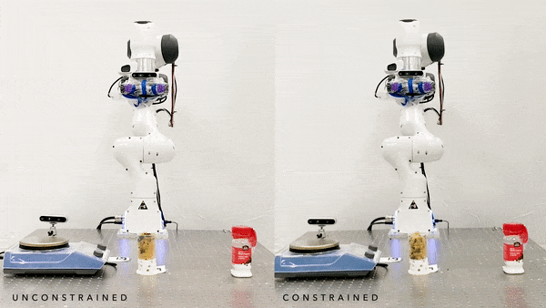
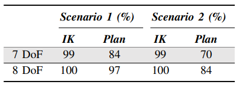
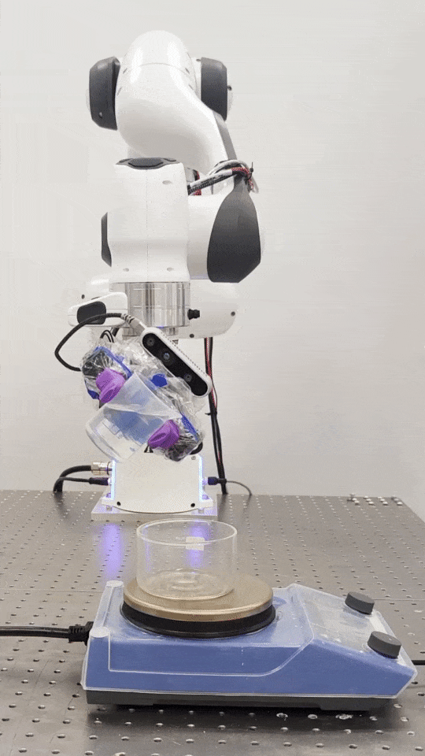
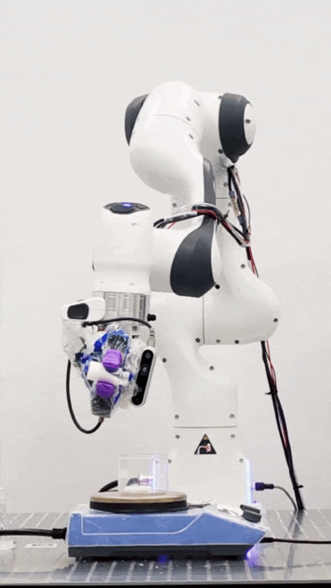

Liquid transfer is one of the essential skills used in a chemistry lab. A pouring skill that intermittently rotates the container is implemented. This pouring strategy compensates the delayed feedback from the scale and outperformed PD controller. We present and analyze a set of accurate and efficient pouring skills inspired by human motions.
Constrained Task and Motion Planning
In a chemistry lab, the robot tends to carry beakers that contain liquids inside. Spillage avoidance should be considered in generating robot motions. Our framework integrates constrained motion planner with task and motion planning module and realized spillage-free robot motion.

Constrained Motion Planning Performance of 7 DoF and 8 DoF Robot
The constrained motion planning performance of 7 DoF and 8 DoF robot is evaluated in two scenarios: (1) single step, (2) two steps. In scenario (1), robots find a constrained path with a fixed orientation from initial to final positions that are randomly sampled. Scenario (2) extends the first with an additional intermediate sampled waypoint.
Scenario 1: Single Step
7 Degrees of Freedom
8 Degrees of Freedom
Scenario 2: Two Step
7 Degrees of Freedom
8 Degrees of Freedom
The performance of the 7-DoF and 8-DoF robot arms for the two scenarios are shown in the following table. The results show that the IK and constrained motion planning have higher success rates in 8-DoF compared with the 7-DoF robot.

Pouring skill


